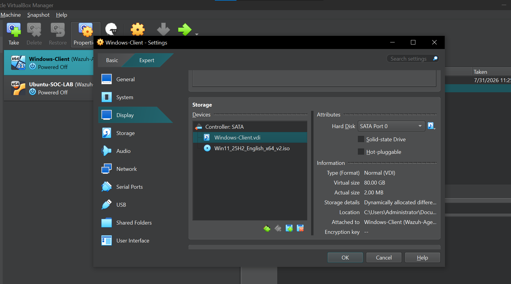

SIEM Operations
Wazuh deployment, centralized visibility, event collection, security alerts, and monitoring concepts.
CYBERSECURITY · FEATURED PROJECT
A virtual Security Operations Center designed to build practical experience in centralized endpoint monitoring, SIEM operations, security event collection, networking, and technical troubleshooting.

PROJECT OVERVIEW
The goal was to move beyond theoretical cybersecurity concepts by designing and configuring an isolated monitoring environment. The lab needed Windows and Linux systems, reliable virtual networking, centralized security visibility, and a foundation for future attack simulations and investigations.
I deployed and configured the virtual machines in Oracle VirtualBox, administered Windows 11 and Ubuntu, connected the systems through NAT and host-only networking, and used Wazuh as the SIEM and endpoint monitoring platform.
IMPLEMENTATION
Created Ubuntu and Windows 11 virtual machines and allocated CPU, memory, storage, and network resources to support the SOC environment.
Configured Ubuntu networking, prepared the Windows workstation as a monitored enterprise-style endpoint, and deployed Wazuh to centralize endpoint events, alerts, and security visibility.
Worked with NAT, host-only adapters, IP addressing, Linux interfaces, Windows networking, and connectivity testing to enable controlled communication between systems.
Diagnosed boot configuration, storage capacity, resource-allocation, and network-interface issues. Successful access to Windows 11, Ubuntu, and Wazuh confirmed the core infrastructure was operational.
CYBERSECURITY SKILLS GAINED
Wazuh deployment, centralized visibility, event collection, security alerts, and monitoring concepts.
Windows and Linux endpoint visibility, system-event collection, and security monitoring foundations.
Understanding centralized logs, security events, alert context, and investigation workflows.
Virtual segmentation, NAT and host-only networks, IP addressing, adapters, and connectivity validation.
Hands-on Windows 11, Ubuntu Linux, command-line, storage, boot, and resource configuration.
Diagnosing VM boot failures, Linux interfaces, network communication, and resource limitations.
Designing an isolated monitoring environment connecting endpoints to a centralized SIEM.
Oracle VirtualBox deployment, virtual hardware allocation, snapshots, storage, and networking.
Documenting architecture, implementation phases, troubleshooting, outcomes, and future enhancements.
OUTCOME
The completed lab established an operational foundation for centralized endpoint monitoring and future SOC exercises. It can be expanded with failed-login detection, Nmap reconnaissance, EICAR testing, Wireshark analysis, Suricata, custom Wazuh rules, MITRE ATT&CK mapping, and incident-response exercises.
Future workflow: Attack → Detection → Alert → Investigation → Response